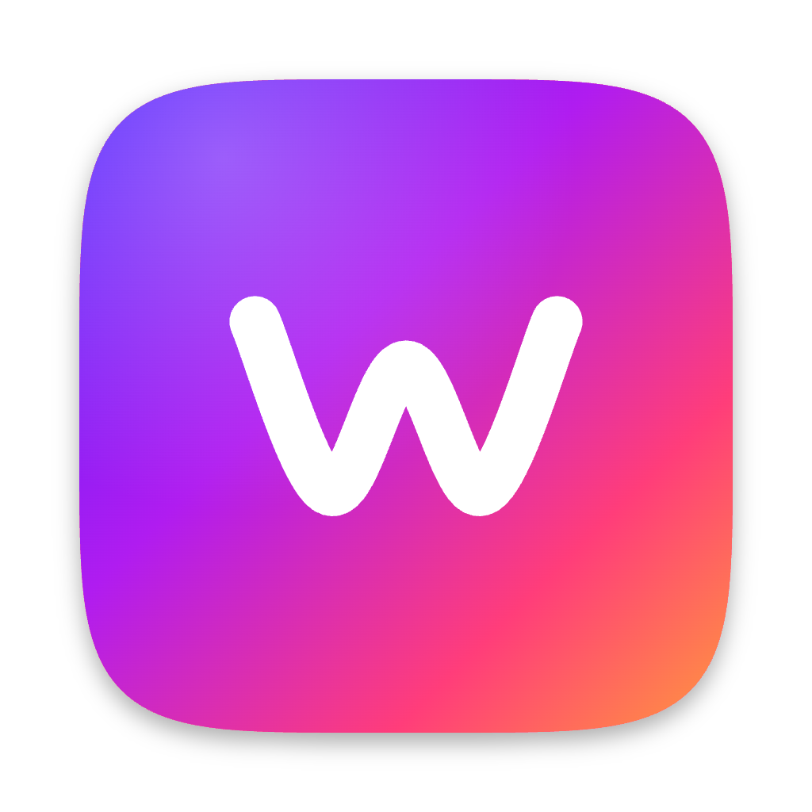
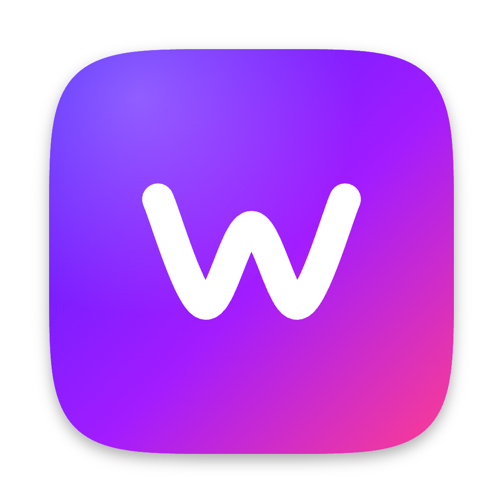

Знак в духе Apple Music и Spotify: один простой белый символ на цветном поле. У каждого варианта — иконка приложения, мелкие размеры вплоть до вкладки браузера и пара с названием на тёмном и светлом.
Знак — «Волна‑W», фон — «Сумерки»: ночь переходит в закат. «Ночь» и «Закат» остаются альтернативными иконками в настройках приложения, как в Telegram.


С iOS 26 и macOS 26 система показывает значок по-разному в зависимости от темы. Для каждой есть свой вариант: в приложения уходят слои для Icon Composer и варианты для каталога ресурсов Xcode.